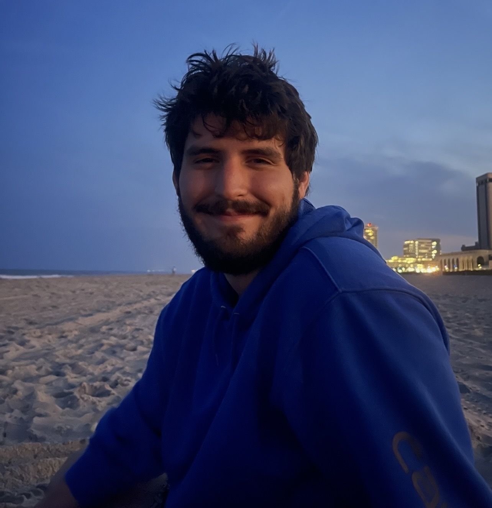

About Me

I am Mason McNett, a senior Environmental Science major graduating from Washington & Jefferson College in May 2026, with a minor in Professional Writing. My academic interests focus on biodiversity, ecosystem processes, and conservation practices that support efforts toward making the world more sustainable. Through my coursework and field experiences, I have developed an interest in how environmental systems are studied and managed at both local and regional scales. After graduation, I plan to pursue work with the Greene County Conservation District, particularly in nutrient management and stream restoration programs.
Why I Chose This Field
I chose environmental science because ever since I was young I’ve been interested in nature, plants, and animals. I’ve always wanted to understand how the natural world works and what humanity’s place is in it. In high school, my favorite classes were my natural science and biology courses, which is what really started pushing me toward environmental topics in college.
When I took an intro to environmental studies class in college, I was introduced more into ecology, conservation, and sustainability. I learned a lot of things I was interested in, and it opened me up to that side of environmental science. Not long after taking it, I decided to declare environmental science as my major.
Education & Relevant Courses
At W&J, I’ve taken a variety of environmental and biology-related courses throughout my time here. Some of these include Field Biology, Invertebrate Zoology, Ecology, multiple Biology courses, Environmental Ethics, and others.
Through these classes, I’ve learned a range of important skills like data collection, experimental design, field sampling methods, and basic data analysis. A lot of these courses also involved working in groups, both in the field and in lab settings, which helped build experience with collaboration and interpreting environmental data in real-world contexts.
Personal Interests
Outside of school and work, I like spending time with my siblings and my girlfriend. I enjoy being outdoors, whether that’s just going for walks or exploring new places. I also like learning about new things when I get the chance.
In my free time, I play video games, take care of plants and pets, and try to make time for reading and writing. I also enjoy watching movies and TV shows and finding new ones to get into.